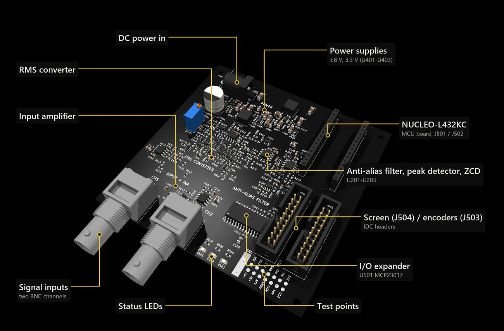

EPR320 · ongoing · sole designer
PBCCO-O1000 impedance analyser front end
A DIY differential-input oscilloscope built as the measurement core of a full impedance analyser for EPR320. I am the author, designer and systems engineer. It went through several design iterations: a breadboard on lab supplies, a veroboard with a charge pump, and now a fabricated PCB.
Analogue RMS, peak and zero-crossing front end, ±8 V op-amp rails from two buck converters, an STM32 NUCLEO-L432KC, a 2.8″ ILI9341 screen and two rotary encoders for the menu.